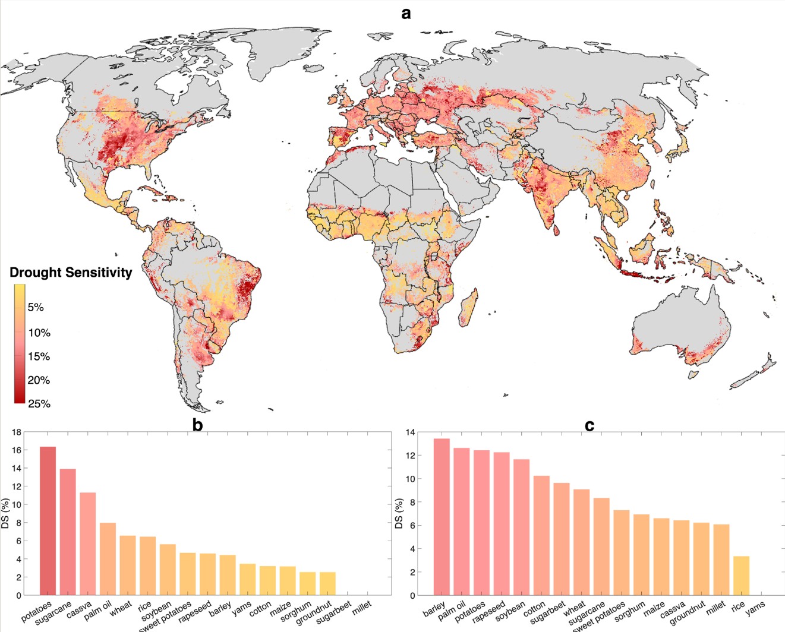
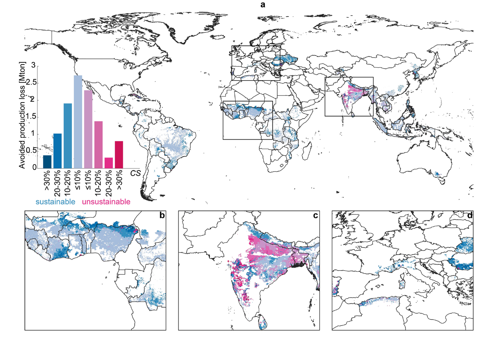

全球干旱对作物影响的热点以及该如何解决？
《Addressing Global Hotspots of Drought-Related Crop Production Losses》 论文精读
Tuninetti, M. & Davis, K.F. (2026). Nature Communications. https://doi.org/10.1038/s41467-026-72715-y
术语表 / Terminology Ledger
| 规范术语 | 中文翻译 | 首次定义 |
|---|---|---|
| Drought Sensitivity (DS) | 干旱敏感性 | 作物产量对由气候变率驱动的水分异常（ETₐ 降至第10百分位）的响应程度，以中位产量百分比损失衡量 |
| Actual Evapotranspiration (ETₐ) | 实际蒸散发 | 作物在整个生长季通过蒸散发实际消耗的水量 (mm·day⁻¹) |
| Reference Evapotranspiration (ET₀) | 参考蒸散发 | 标准化参考作物表面的蒸散发量，代表大气蒸发需求 |
| Water Production Function | 水分生产函数 | 将产量变化与实际蒸散发变化联系起来的经验关系 (ET–Y relationship) |
| Yield Response Factor (k_y) | 产量响应系数 | 表征作物对水分亏缺条件的敏感性系数 |
| Monsoon Cereals | 季风谷物 | 玉米(maize)、小米(millet)、水稻(rice)、高粱(sorghum) |
| WaterCROP Model | WaterCROP 模型 | 本文开发的基于日尺度土壤水平衡的网格化作物实际蒸散发估算模型 |
| TAWC | 总有效含水量 | Total Available Water Content — 土壤中可供作物利用的总水量 |
| RAWC | 易效含水量 | Readily Available Water Content — 作物根系层中可实际利用的水分部分 |
| Physical Water Scarcity | 物理性水资源短缺 | 可再生淡水不足以满足灌溉需求的情况 |
| Economic Water Scarcity | 经济性水资源短缺 | 水资源物理上充足但缺乏灌溉基础设施的情况 |
| MAPSPAM | — | 空间分配的全球作物生产统计数据 (IFPRI, 2010) |
| CRU TS | — | Climatic Research Unit Time Series 气候数据集 (v4.03) |
| HWSD | — | Harmonized World Soil Database 土壤数据库 |
| LPJmL | — | 动态全球植被和作物模型 |
| FAOSTAT | — | 联合国粮农组织统计数据库 |
一、研究背景
1.1 全球粮食系统的核心矛盾
自1960年代以来，全球粮食供应增长了两倍 (Pingali, 2012)，但这一成就是建立在极其狭窄的作物基础之上的——水稻、玉米、小麦等少数几种大宗作物贡献了大部分产出。这导致：
- 作物生产结构趋于同质化 (Khoury et al., 2014)：主食作物种类减少，更有营养的谷物被高产量但气候韧性较低的作物组合所替代；
- 气候变化和极端事件的压力日益增大：气候变率已能解释全球主要作物三分之一以上的产量波动 (Ray et al., 2015)，而极端事件 (干旱、热浪、洪水) 进一步加剧了产量不稳定 (Vogel et al., 2019)；
- 预计未来气候变率将进一步增加 (Bathiany et al., 2018)，因此提高作物生产的气候韧性 (climate resilience) 成为适应战略的核心。
1.2 已有研究的不足 (Knowledge Gap)
尽管大量研究关注了气候对少数几种大宗作物 (玉米、水稻、大豆、小麦) 的影响，但存在以下局限：
- 作物覆盖不全：大多数研究仅关注”四大作物”，缺乏对更广泛作物篮子 (17种及以上) 的系统评估；
- 空间分辨率粗糙：现有研究多在国家和亚国家尺度开展，难以精确识别热点区域；
- 方法学局限：主要依赖基于历史农业统计的统计方法，缺乏将特定作物生理参数与气候水文过程耦合的机制性分析；
- 干旱指数不针对作物：现有干旱指数 (PDSI、SPI、CMI等) 并非针对特定作物的敏感性定制。
本文定位：填补这一关键知识空白——在全球精细空间分辨率上，系统量化 17 种主要作物整个生产篮子的干旱敏感性 (DS)，并评估两种干预策略 (可持续灌溉扩展 + 作物转换) 的潜力。
二、关键科学问题
本文试图回答以下核心科学问题：
| # | 关键科学问题 | 对应分析 |
|---|---|---|
| Q1 | 全球17种主要作物的干旱敏感性 (DS) 在 空间上 如何分布？哪些地区和作物构成 “热点”？ | 第1部分：Rainfed DS 全球网格化估算与热点制图 |
| Q2 | 在当前气候变率下，干旱相关的产量损失全球规模有多大？相当于多少热量损失？ | 第1部分：全球损失估计 (10.1% rainfed, 6.8% irrigated) |
| Q3 | 在水资源可持续约束下，灌溉扩展到雨养农田可在多大程度上减少气候相关产量损失？ | 第2部分：可持续灌溉扩展潜力评估 |
| Q4 | 在水资源无法支持灌溉扩展的地区，作物转换 (crop switching) 是否可作为替代适应策略？ | 第3部分：配对比较与像素级作物转换评估 |
| Q5 | 整合两种策略 (灌溉扩展 + 作物转换) 可产生怎样的协同效益？ | 第4部分：综合解决方案评估 |
三、使用的数据和方法
3.1 数据源
| 数据类型 | 来源 | 时空分辨率 |
|---|---|---|
| 月降水和潜在蒸散发 (1961–2018) | CRU TS v4.03 (Harris et al., 2020) | 30 arcminute → 重采样至 5 arcminute |
| 土壤有效含水量 | HWSD (FAO/IIASA, 2012) | 0.5 arcminute |
| 种植日期和生长季时长 | Portmann et al. (2010) — MIRCA2000 | 5 arcminute |
| 作物收获面积和产量 (2010) | IFPRI MAPSPAM v2.0 | 5 arcminute (~10 km at equator) |
| 作物系数 (k_c) 和产量响应系数 (k_y) | FAO56 (Allen et al., 1998); Doorenbos & Kassam (1979); Pereira et al. (2021); Minhas et al. (2020) | 按气候区域和生长阶段分 |
| 物理/经济水资源短缺图 | Rosa et al. (2020) | 5 arcminute |
| 热量含量 | 各类文献 (Table S4) | kcal/ton |
**研究作物 (17种)**：大麦、木薯、棉花、花生、玉米、小米、油棕、马铃薯、油菜籽、水稻、高粱、大豆、甜菜、甘蔗、甘薯、小麦、山药 — 合计占全球初级作物产量的 **75%**。
3.2 核心方法框架 — WaterCROP 模型
Step 1: 计算每日实际蒸散发 (ETₐ)
WaterCROP模型 (改良自 Tuninetti et al., 2015) 在每个 5 arcminute 网格单元内运行日尺度土壤水平衡模型：
1 | |
其中：
ET₀,j= 日参考蒸散发 (由月值线性插值获取)k_c,j= 日作物系数 (随生长阶段变化)k_s,j= 日水分胁迫系数 (雨养: 日土壤水平衡 → 胁迫时 <1; 灌溉: 始终 = 1)
→ 每年 (1961–2018) 生长季内逐日循环计算，得到年际 ETₐ 序列 (58年 × 每作物 × 每网格)
Step 2: 计算干旱敏感性 (DS)
1 | |
- 通过 ET–Y 水分生产函数 (Doorenbos & Kassam, 1979) 将 ETₐ 的变化转换为产量变化：
1
(1 − Y_median / Y_2010) = k_y × (1 − ETa,median / ETa,2010) - 再对 ETₐ,10th 重复此计算以获得极端条件下的产量
- DS 度量中位产量 (正常气候) 与第10百分位 ETₐ 条件下的产量 (极端不利气候) 之间的百分比差距
Step 3: 可持续灌溉扩展评估
- 利用水资源短缺图识别可安全灌溉扩展的雨养区域 (无物理水资源短缺处)
- 将雨养产量替换为对应灌溉产量和 DS 值 → 估算产量损失减少和生产增长
Step 4: 作物转换评估
- 配对比较：在两种作物共现的像素中，比较产量加权的 DS 累积分布函数 (CDF)
- 像素级转换：若替代作物产量 ≥ 当前作物产量且 DS 更低，则进行比例性面积替换 (仅限季风谷物)
Step 5: 模型验证
- 本文 ET–Y 产量估计与 FAOSTAT 国家去趋势产量序列 (去趋势后异常) 的比较 (两样本 KS 检验)
- 与 LPJmL 过程模型 (固定技术和管理) 的异常一致性验证
- 17种作物中12种与 FAOSTAT 异常在统计上无法区分 (H=0)；与 LPJmL 的一致性同样较高
3.3 方法学核心图示
1 | |
四、新发现与新认识
4.1 全球干旱敏感性空间格局 (Q1)
关键发现 1：全球雨养生产干旱敏感性热点分布极不均匀，且与主要粮食产区的空间重合度高

全球雨养作物生产干旱敏感热点 干旱敏感热点 图1：全球雨养作物生产的干旱敏感热点。1961年至2018年期间总作物产量的像素级干旱敏感性（DS）（a）。巴西（b）和中国（c）的国家平均干旱敏感性作为示例，因为这些国家作物多样性较高且地理多样。
- 全球雨养生产平均 DS = **10.1%**（中位雨养产量在极端水分条件下损失约十分之一）
- 灌溉生产平均 DS = **6.8%**（灌溉有效缓冲了部分气候冲击）
- 主要热点区域：
- 🌽 美国中西部：大豆 (15.2%)、大麦、高粱 — 与已过度开发的水资源区高度重合
- 🇧🇷 巴西东部 (Caatinga / Mata Atlântica)：马铃薯、甘蔗、木薯
- 🌊 地中海盆地：西班牙 (油菜籽、甘薯)、摩洛哥 (马铃薯、大麦)、阿尔及利亚 (小麦)
- 🌾 南亚 (印度/孟加拉)：小麦、大豆、木薯、水稻
- 🇨🇳 中国：大麦、棕榈油、马铃薯 — 中国水稻 DS 为研究作物中最低
关键发现 2：干旱敏感性最高和最低的作物群体分化明显
| 敏感性等级 | 作物 | DS (%) |
|---|---|---|
| 🔴 最高 | 雨养大豆 (soybean) | 15.2 |
| 雨养马铃薯 (potatoes) | 13.5 | |
| 雨养油菜籽 (rapeseed) | 12.6 | |
| 🟢 最低 | 雨养山药 (yams) | 2.8 |
| 雨养花生 (groundnuts) | 6.2 | |
| 雨养小米 (millet) | 6.8 |
上述相对敏感性与这些作物的农学耐旱特性一致 (Daryanto et al., 2017)。
关键发现 3：DS 指标揭示水分限制机制的差异
- 大多数作物 (>90% 的种植像素中降水低于第20百分位)：属于”水分限制型“ (water-limited) — 降雨不足是导致 ETₐ 降低和产量损失的主因
- 高粱、小米、油菜籽、山药 表现不同：属于”能量限制型“ (energy-limited) — 其 ETₐ 最低年份通常伴随较低的大气蒸发需求 (更凉爽、多云、低风速条件)，此时水分供给并非瓶颈，而是降低的蒸发/蒸腾驱动力限制了作物水分利用和生产力
4.2 全球损失规模估计 (Q2)
关键发现 4：干旱相关生产损失相当于 21 亿人的热量供给
| 雨养 | 灌溉 | |
|---|---|---|
| 生产损失 (百万吨) | 406 | 135 |
| 生产损失 (%) | 10.1% | 6.8% |
| 热量损失 (10¹⁵ kcal) | 1.5 | 0.5 |
| 相当于养活人数 (2500 kcal/day) | 16 亿 | 5 亿 |
关键发现 5：主要生产国也是高敏感国
10/17 种作物的国家平均 DS 与国家总产量呈显著正相关 — 意味着产量越大的地区也往往面临更大的气候变率敏感性。这一发现强化了适应行动的紧迫性。
4.3 可持续灌溉扩展的潜力 (Q3)
关键发现 6：可持续灌溉扩展可避免 60% 的雨养损失，同时增产 12%
- 以季风谷物 (水稻、玉米、小米、高粱) 为例：
- 可持续灌溉扩展 → 雨养损失减少 **60%**，全球中位产量增加 12%
- 最大收益地区与长期食品不安全区域高度重合：尼日利亚、南苏丹、委内瑞拉
- 但存在大量”不可持续扩展的热点“：如印度、孟加拉的许多水稻种植区 — 水资源短缺限制了灌溉扩展空间 (Fig.2c)

4.4 作物转换的机会 (Q4–Q5)
关键发现 7：玉米、小米、高粱的干旱敏感性系统性地优于水稻
通过产量加权 CDF 比较，在所有共现种植像素中：
- 雨养和灌溉水稻的 DS CDF 曲线始终低于玉米、小米和高粱
- 但玉米-小米、玉米-高粱、小米-高粱之间的相对优劣依赖于具体地点，需要进行像素级评估
关键发现 8：整合方案在不同国家产生异质性效益
| 国家 | 灌溉减少损失 | 转换额外减少 | 灌溉增产 |
|---|---|---|---|
| 🇳🇬 尼日利亚 | −98% | 有限 | 显著 |
| 🇦🇷 阿根廷 | −92% | 有限 | 显著 |
| 🇧🇷 巴西 | −86% | 有限 | +57% |
| 🇲🇲 缅甸 | 主要 | +21% | — |
| 🇧🇩 孟加拉 | 主要 | +11% | — |
| 🇮🇩 印度尼西亚 | 主要 | +10% | — |
整合方案在水稻是主要季风作物的南亚/东南亚效益最显著 — 因为水稻 DS 高于替代作物。
五、结论
5.1 核心结论
- 构建了一个可规模化、可迁移的干旱敏感性 (DS) 评估框架 — 能够量化17种主要作物的 DS 全球空间格局，识别精确的热点区域。
- **全球雨养生产在历史极端气候下损失 10.1%**，相当于 21 亿人的年热量需求 — 说明气候变率对全球粮食安全的威胁是实质性且大规模的。
- 可持续灌溉扩展和作物转换是两种有效且互补的适应策略：
- 灌溉扩展可避免约 60% 的雨养损失并增产 12% (季风谷物)
- 在灌溉不可行地区，作物转换可提供额外 2%–21% 的损失减少
- 解决方案具有空间异质性，需要因地制宜 — 但 DS 热点与潜在收益区的空间重合度很高，说明针对热点进行精准干预是可行的。
5.2 方法论贡献
- 首次提供 17 种作物 (远超传统的”四大作物”) 的 全球 5 arcminute 分辨率干旱敏感性估计；
- DS 指标实现不同作物和区域之间的客观横向比较；
- 方法论可应用于历史追踪 (如评估已发生的作物分布变化是否降低了整体 DS)、未来情景评估 (如检验计划中的作物选择是否会损害气候韧性) 以及多尺度决策 (从全球到国家到子区域)。
六、研究亮点
| # | 亮点 | 详细说明 |
|---|---|---|
| 🌟 1 | 从”单一作物”到”全生产篮子” | 超越现有研究仅关注玉米、水稻、小麦、大豆的局限，首次覆盖 17 种作物 (占全球产量 75%)，特别是提供了棕榈油、甘薯、木薯、小米等”研究不足”作物的全球 DS 估计 |
| 🌟 2 | 水分限制 vs. 能量限制的机制区分 | 发现并非所有”ETₐ 降低”都源自缺水 — 高粱、小米等作物的低 ETₐ 年来自大气蒸发需求降低而非土壤干旱。这一区分对正确解读 DS 指标和设计干预策略至关重要 |
| 🌟 3 | 水资源可持续性作为硬约束 | 灌溉扩展评估中明确纳入物理和经济水资源短缺约束 (Rosa et al., 2020)，避免推荐不可持续的灌溉扩张方案 — 这是许多全球尺度假定”灌溉可消除气候风险”的研究所忽略的 |
| 🌟 4 | 方法论的尺度中立性与可迁移性 | DS 框架不依赖复杂的作物过程模型参数，可在不同空间尺度 (全球/国家/子国家) 和不同作物组合上复现，并兼容更先进模型的嵌入 (如 APSIM、DNDC) |
| 🌟 5 | 配对 CDF 比较的精巧设计 | 仅在两作物共现像素中比较 DS 分布 — 控制了农业气候因素的混杂效应，确保比较的是”在同一地点实际可行的选择”而非简单的全局均值对比 |
| 🌟 6 | 三重模型交叉验证 | 同时与 FAOSTAT 去趋势官方统计和 LPJmL 过程模型 (固定技术/管理) 进行 KS 检验验证，17 种作物中 12 种异常分布统计无差异 — 验证强度高于大多数同类研究 |
| 🌟 7 | 可操作性强 | DS 热点图 + 灌溉可行性图 + 作物转换潜力图构成了一个决策支持工具箱，可指导不同空间尺度上的适应政策设计和投资优先级排序 |
| 🌟 8 | 坦率的局限讨论 | 作者系统讨论了固定种植范围假设、农业统计的空间精度限制、模型简化与过程模型之间的权衡、以及实施干预的复杂社会经济约束 — 这种透明性和自省性增强了结论的可信度 |
七、批判性阅读笔记 / Critical Reading Notes
- DS 指标不直接捕捉温度极端值的影响：DS 仅通过水分平衡 (ETₐ) 间接反映温度和辐射的作用。高温热害 (如开花期热胁迫) 的直接生理效应未被纳入——这限制了该指标对”复合型干热事件”影响的完全表征。
- 固定 2010 年作物分布假设：分析基于 2010 年收获面积的静态快照，无法捕捉过去几十年的种植模式变化 (如 Sloat et al., 2020 记录的作物迁移)，也无法反映未来可能的适应。
- 灌溉扩展的用水竞争未充分量化：虽然在”物理缺水”区域排除了灌溉扩展，但灌溉消费性用水的增加可能通过流域水平的水量平衡影响下游用户的可用水量——这是一个需要更细粒度水文模拟的维度。
- 作物转换的社会经济可行性：像素内两种作物共存不等于农户可以无摩擦地转换——市场准入、价值链、传统偏好、政策激励等均在分析范围之外。
- 文章的 In Press 状态：本文为 Nature Communications “Article in Press” (未编辑版本)，最终发表的编辑版本可能在文字和数据呈现上有细微调整。
本文生成于 2026-06-04，基于 Nature Communications Article in Press 版本全文。